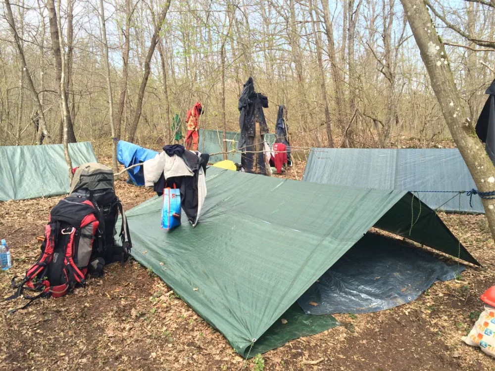

50. Zagrebačka speleološka škola
Došli smo i do nje. Jubilarna 50. Zagrebačka speleološka škola. Ako ste zainteresirani, pogledajte što vas tamo čeka

Evo je!
Jubilarna 50. Zagrebačka speleološka škola!
Već punih pedeset godina stvaramo speleološke pripravnike i speleologe. Nije mala stvar. Zbrojite prosječnih 20-ak polaznika sa tim brojem godina i dobit ćete finu četveroznamenkastu cifru ljudi koji su imali priliku probati nešto što će malo ljudi u životu ikada probati.
Mnogi od njih (p)ostali su speleolozi, instruktori, gorski spašavatelji, neki su se nastavili baviti speleologijom sve dok ih životni putevi odveli drugim smjerom, a manji broj nekih nakon završene škole više nikada nisu zakoračili u mračni svijet ispod površine.
Ali ono što im je pružila speleološka škola nisu i neće nikada zaboraviti.
A što vam mi to pružamo?
Priliku da postanete članom jedne male, ali iznimno povezane populacije.
Priliku da postanete istraživač jednog od najmanje istraženih područja ove planete.
Priliku da naučite vještine i znanja koja nećete naučiti u svakodnevnom životu, ali ćete ih sigurno koji put koristiti u istom.
Priliku da naučite kako živjeti sa prirodom i kako zaštiti tu istu prirodu.
Priliku da upoznate naše šume, planine, livade, vrtače, rijeke, jezera...
Priliku da opet otkrijete prijateljstvo i povezanost koja će se razviti između potpuno novih i međusobno nepoznatih ljudi, sa doživotnom garancijom.
Kako ćemo vam to pružiti?
Odvest ćemo vas na pet dvodnevnih vikend izleta u prirodu.
Pokazat ćemo vam kako noćiti u prirodi, a da niste korisnik hotelskog smještaja.
Shvatiti ćete zašto ne nosimo sendviče na te izlete, zašto Velebitaški stol nije isti kao stol za kojim ručate doma.
Shvatit ćete razliku između šatora za dvoje i bivka za sedmero.
Zašto gitara i drugi instrumenti putuju sa nama.
Posjetiti ćete neke tajanstvene i mračne "objekte" koje nazivamo špiljama i jamama,
u kojima nema sobne lampe ili maminog čokolina.
Shvatit ćete zašto topla Cedevita nije gadljivi bauk već nešto najbolje što ste u tom trenutku ikada probali.
Što ćete naučiti?
Kroz šest predavanja srijedom naučit ćete razliku između paleontologije i geologije.
Čudni i nepoznati pojmovi poput speleogeneze postat će vam bistri i jasni kao gorski izvor.
Naučiti ćete kako se kretati po planinama - ne sa japankama već sa pravom opremom, odjećom i obućom koju ćete kao budući znalci sada znati kupiti pa neće vas biti sram kada uđete u specijalizirane dućane jer sada točno znate što vam treba.
Naučiti ćete kako se pravilno koriste razne čudne spravice čudnih imena descender, bloker, croll, shunt, pantin, stremen...
Po prvi puta nakon svog rođenja ponovo ćete biti vezani pupčanom - i zavoljet ćete je još i više.
Spoznat ćete razliku između statika i dinamika, i zašto uže ili špaga nisu isto što i štrik za veš vaše mame. Također, naučiti ćete razliku između debljina 3, 5, 9 i 10,5 mm, ali i što znače one šare na šarenim užetima.
Također, naučiti ćete kretanje po tim istim užetima i gore i dolje, a da vam pri tome visina od 5, 10, 50 ili 200 metara neće predstavljati bitnu razliku.
Naučiti ćete kako koristiti malenu crvenu torbicu sa nazivom "Prva pomoć" i kako je pravilno primjeniti u slučaju kakve nezgode, bilo na sebi ili na svom prijatelju.
Naučit ćemo vas kako se orijentirati pomoću sunca i mjeseca, zvijezda i mahovine, kako pročitati kartu i koristiti kompas ako vas put nanese tamo gdje - puta nema.
Naučiti ćete neke nove i nepoznate špiljarske pjesme iz Pjesmarice koja je nastajala od početka škola pa i prije.
A kad to sve završi, doći ćete spremni i naučeni na ispit na kojem ćemo vas, nakon što vas "ispretresemo" dobiti svjedodžbu kojom ste stekli zvanje Speleološkog pripravnika i pravo da dalje napredujete i istražujete špilje i jame sa svojim novim prijateljima sve do zvanja Speleologa. Tulum je obavezan.
Što vi trebate?
- Učlaniti se u neko planinarsko društvo.
Ako već niste, možete se učlaniti na licu mjesta u naše - PDS Velebit. - Donijeti lječničku potvrda o zdravstvenom stanju
ukoliko imate neke probleme koji bi mogli na bilo koji način ograničavati fizičku aktivnost, mi to moramo znati. - Potpisati izjavu o odgovornosti
Ključno pitanje - koliko košta speleološka škola?
Cijena? Sitnica.
Iznosi 700,00 kn.
Zadovoljstvo dostignutim - neopisivo.
Škola se kroz teorijski i praktični dio provodi po programu Komisije za speleologiju HPS.
Važno za znati:
Škola počinje 18. ožujka 2020.
Broj mjesta je ograničen!
Voditelj škole: Vedran Ferenčak, tel. 095-85-45-161, mail: vendref@gmail.com
Za dodatne info posjetite nas SRIJEDOM OD 19.30 u Radićevoj 23
Na kraju, pogledajte kako smo se zabavili na prethodnim školama
[gallery ids="3060,3061,3062,3063,3064,3065,3066" type="rectangular"]
I kako to izgleda na kraju:
[youtube https://www.youtube.com/watch?v=Ufhj-1VM--4&w=560&h=315]